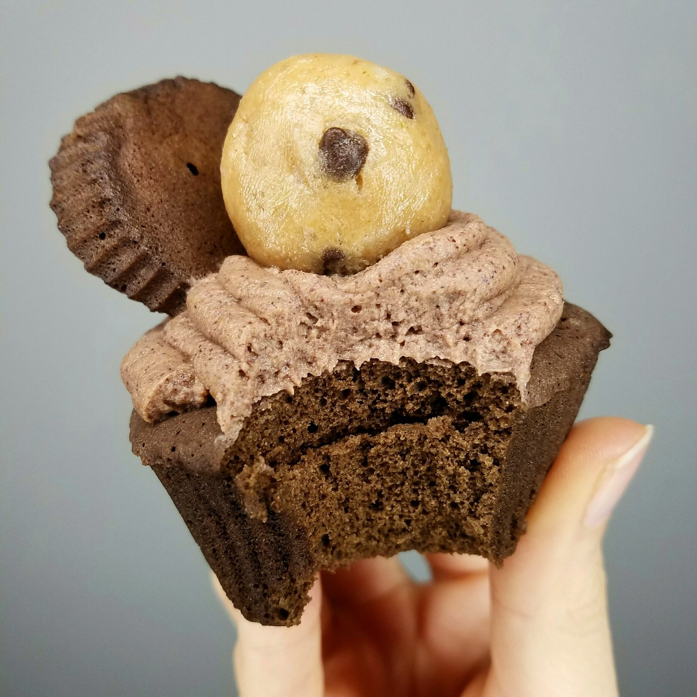
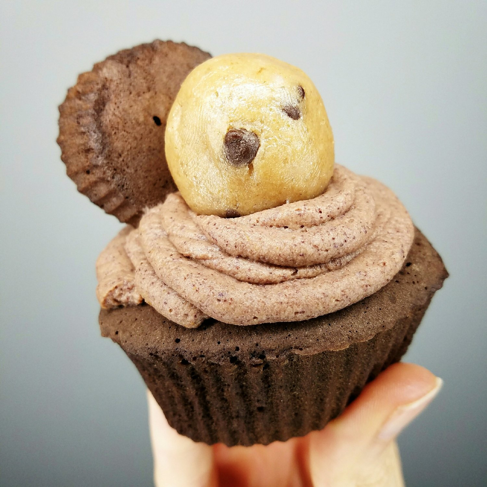

Double Chocolate Microwave Cupcake (vegan, gf)


The most simple double chocolate microwave cupcake that only takes 60 seconds to make. This recipe is vegan, gluten free, and sugar free. Although seemingly indulgent, this cake makes the for perfect healthy snack. This recipe is my go-to lazy day dessert.
Sorry I post this so much but...there's just something about it. The texture is so effortlessly soft and fluffy. This time around, I added a ball of edible cookie dough and just trust me that it's a great combination. I mean, when is cookie dough not a great addition to a dessert? Yeah...I can't think of anything either.
If you haven't tried this recipe yet, what are you doing?! Try for yourself and see how deliciously easy this vegan, gluten free, microwave cupcake is!
Double Chocolate Microwave Cupcake
Makes: 2 cupcakes
Cake Batter
-
1/4 cup buckwheat flour
-
2 TBSP unsweetened cocoa powder
-
1/3 cup unsweetened almond milk
-
1/4 tsp baking powder
-
1 stevia packet
Icing
-
2 TBSP chocolate pea protein
-
1 stevia packet
-
1 tsp maple syrup
-
1-2 TBSP water
Mix all of the batter ingredients evenly. Pour into two silicone cupcake molds. Microwave for 60 seconds. The cupcakes are done!
Make the icing now. You want to first mix the protein powder, stevia, and syrup. The syrup can be any syrup ie maple syrup, sugar free syrup, brown rice syrup, IMO fiber syrup... This makes it creamier. Then slowly add water until a thick, mixed consistency is reached. Use to ice the cupcakes!!